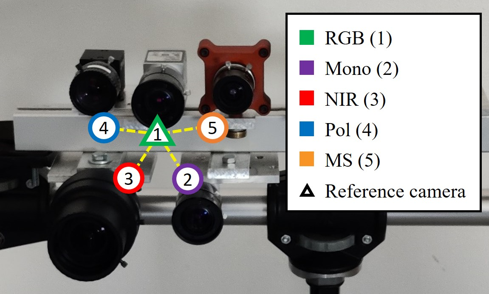
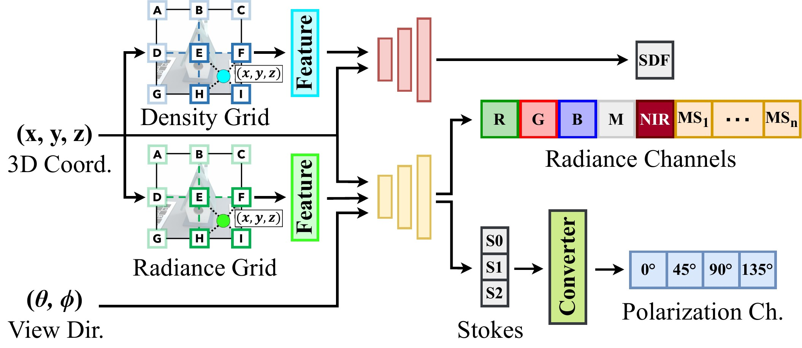
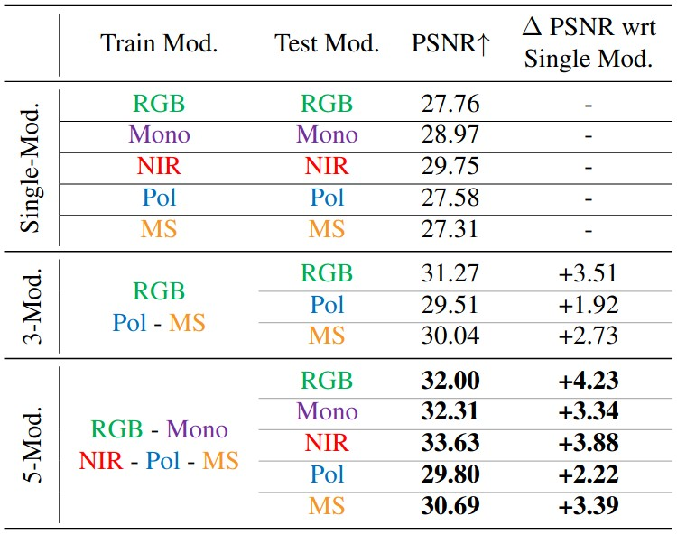
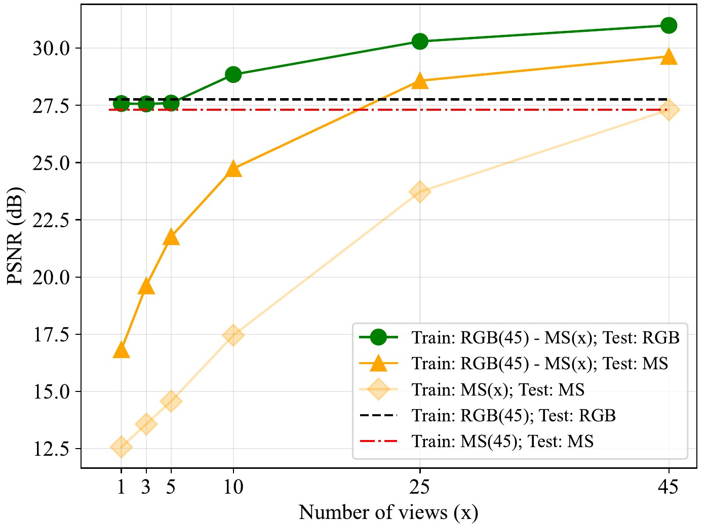

Overview of the proposed framework. MMS-FW exploits unaligned multimodal frames acquired by different sensors to render perfectly aligned novel views for each modality.
The mosaick pattern for each modality is shown in the top corners
We present MultimodalStudio, a project that includes MMS-DATA and MMS-FW. MMS-DATA is a geometrically calibrated multi-view multi-sensor dataset; MMS-FW is a multimodal NeRF framework that supports mosaicked, demosaicked, distorted, and undistorted frames of different modalities. We conducted in depth investigations proving that using multiple imaging modalities improves the novel view rendering quality of each single involved modality.
Neural Radiance Fields (NeRF) have shown impressive performances in the rendering of 3D scenes from arbitrary viewpoints. While RGB images are widely preferred for training volume rendering models, the interest in other radiance modalities is also growing. However, the capability of the underlying implicit neural models to learn and transfer information across heterogeneous imaging modalities has seldom been explored, mostly due to the limited training data availability.
For this purpose, we present MultimodalStudio (MMS): it encompasses MMS-DATA and MMS-FW. MMS-DATA is a multimodal multi-view dataset containing 32 scenes acquired with 5 different imaging modalities: RGB, monochrome, near-infrared, polarization and multispectral. MMS-FW is a novel modular multimodal NeRF framework designed to handle multimodal raw data and able to support an arbitrary number of multi-channel devices.
Through extensive experiments, we demonstrate that MMS-FW trained on MMS-DATA can transfer information between different imaging modalities and produce higher quality renderings than using single modalities alone. We publicly release the dataset and the framework, to promote the research on multimodal volume rendering and beyond.


MMS-DATA scenes preview. It consists of 32 object-centric scenes acquired with 5 different imaging modalities: RGB, Monochrome (Mono), Near Infrared (NIR), Polarization (Pol) and Multispectral (MS). The objects are made of diffusive, glossy, reflective, and transparent materials, such as plastic, metal, wood, organic, cloth, paper, and glass.
|  |
The sensors where mounted on a custom-built rig.
|
|  |
We decoupled the density from the radiance estimation by initializing two separate modules. Both the density and the radiance estimations employ implicit representations shared between modalities because they capture overlapping spectral bands, thus share a relevant part of information. |
|  |
We show in the Table three tests:
For a further analysis, refer to the paper. |
|  |
Let's consider the scenario with an unbalanced number of frames per modality. We trained a 2-modality model with:
These results show that the model can efficiently transfer information from one modality to another. |
@inproceedings{lincetto2025multimodalstudio,
author = {Lincetto, Federico and Agresti, Gianluca and Rossi, Mattia and Zanuttigh, Pietro},
title = {MultimodalStudio: A Heterogeneous Sensor Dataset and Framework for Neural Rendering across Multiple Imaging Modalities},
booktitle = {Proceedings of the IEEE/CVF Conference on Computer Vision and Pattern Recognition},
year = {2025},
}